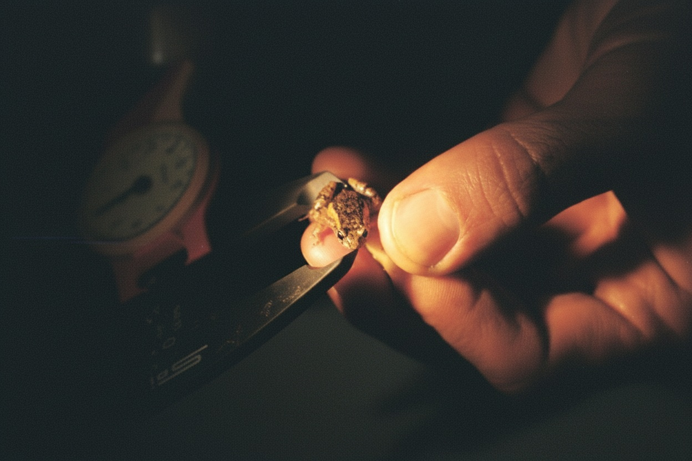
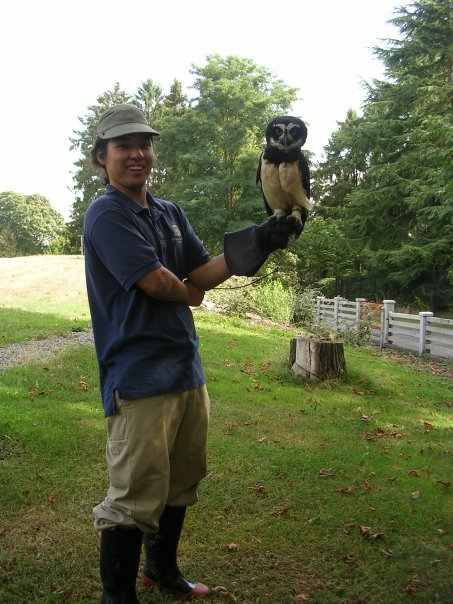
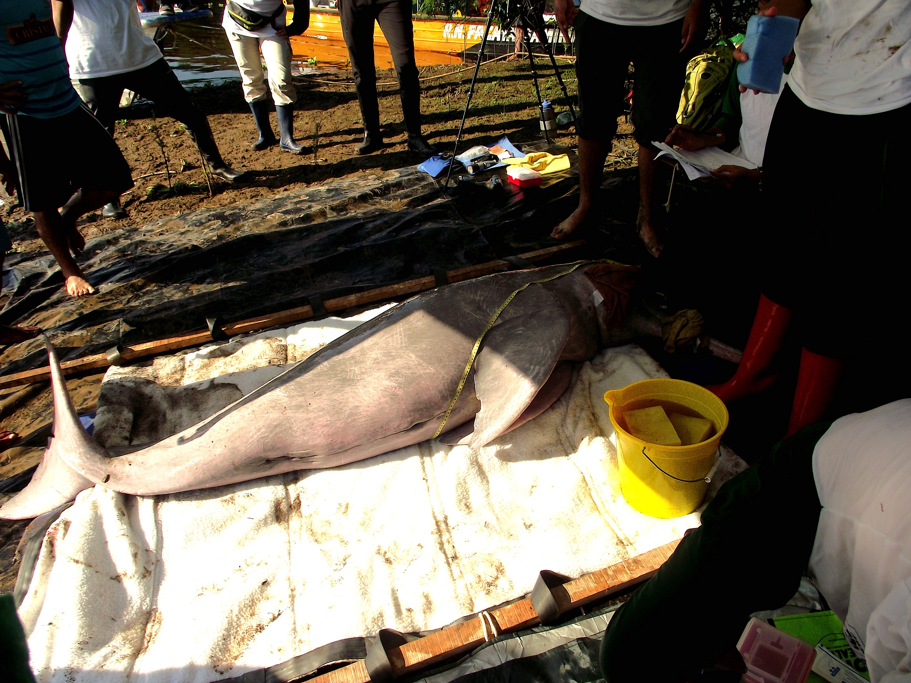

Field Projects

Coastal Wildlife Monitoring
Long-term ecological monitoring of marine mammals, seabirds, and coastal ecosystems — including capture, sampling, tagging, and population tracking in protected areas.

Amazon Research Operations
Field research in Tambopata, Manu, and Los Amigos conservation areas, focusing on wildlife ecology, species monitoring, and biodiversity studies in tropical forests.

Research Station Management
Management of a university research center across multiple field sites, coordinating researchers, logistics, international volunteers, and institutional stakeholders.

River Dolphin Research
Capture and health assessment of Amazon river dolphins (Inia geoffrensis) for population studies and conservation monitoring in Peruvian river systems.

Community Conservation Workshops
Environmental education and stakeholder engagement in lomas (fog oasis) ecosystems, bridging local communities and conservation institutions.

Science & Society Outreach
Designing and leading programs that connect scientific research with community action, policy stakeholders, and international conservation networks.